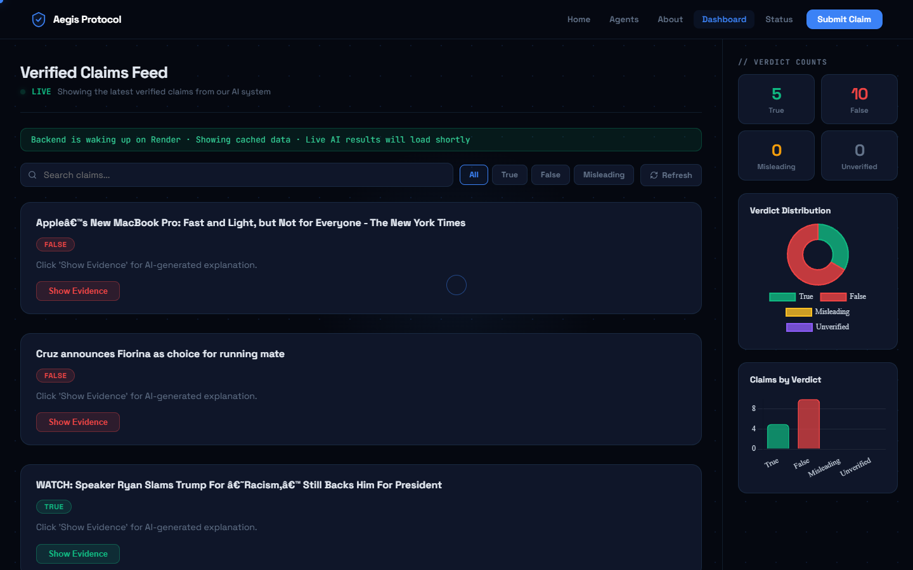
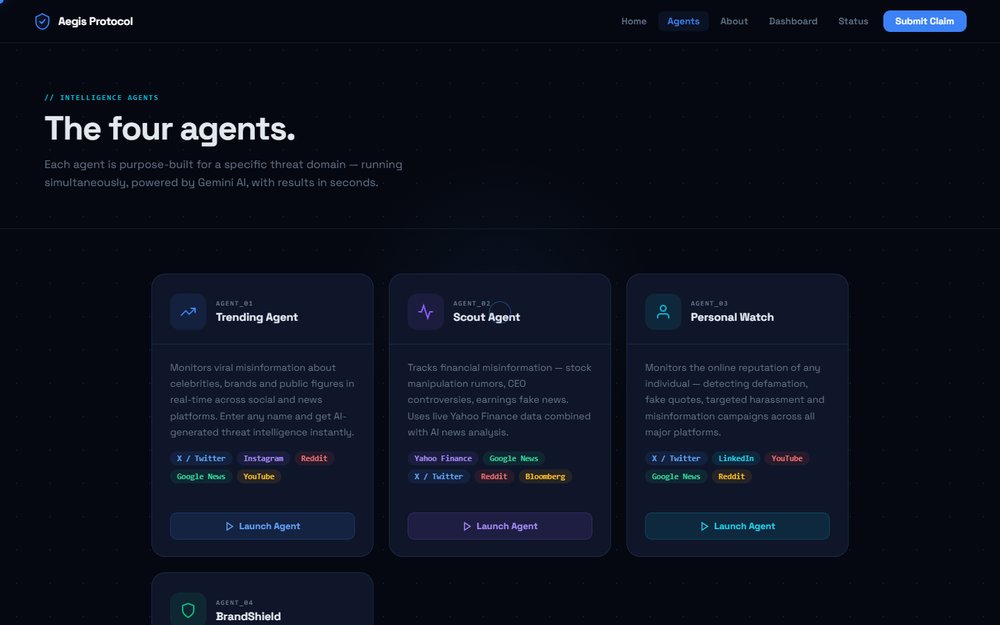

FastAPI + BackgroundTasks
Submission returns immediately while the worker advances the claim through pending, in-progress, completed, or failed states.
Misinformation investigation prototype
A claim enters once, becomes a traceable background job, passes through evidence and investigation stages, and returns as a structured record an operator can inspect instead of a one-shot chatbot answer.
Aegis is not presented as an autonomous truth oracle. It is an investigation workflow for claims, market anomalies, and fast-moving public narratives. The useful engineering problem is orchestration: accepting work, preventing duplicates, gathering context, constraining the verdict shape, recording status, and exposing failure to the UI.
The deployed product combines a static multi-page frontend, a Netlify Gemini gateway, a FastAPI service, background claim processing, RSS ingestion, and Supabase persistence.
The architecture separates deterministic application work from probabilistic model work. That separation makes retries, fallbacks, and review states visible.
Submission returns immediately while the worker advances the claim through pending, in-progress, completed, or failed states.
Research and investigation are distinct prompts. JSON normalization, schema checks, provider fallback, and controlled errors sit around the model call.
Claims and evidence survive page refreshes. The dashboard prefers persisted completed claims and explicitly tops up from the WELFake dataset.
Scout computes market-volatility evidence; Trending collects Google News RSS and optional external social data for specialist scans.
The ingestion agent trims and normalizes the claim, then derives a stable SHA-256 identifier. Existing claims return their current record instead of triggering duplicate inference.
normalized_claim → sha256 → existing record or new jobFastAPI schedules claim processing in the background. The record becomes the shared contract between the API, worker, database, and frontend.
pending → in_progress → completed | failedThe Research Agent produces supporting and refuting material. The Investigator Agent receives that structured context and generates verdict, confidence, severity, and reasoning as a second step.
Successful jobs write evidence and final fields. Failed jobs keep a failed status and an internal error reason, avoiding a silent blank result.
The dashboard can show persisted claims, cached data, or dataset fallback. The interface tells the user when the hosted backend is waking rather than pretending every row is live.


| Subsystem | Source | Responsibility | Engineering detail |
|---|---|---|---|
| API orchestration | backend/main.py | Routes, state, dashboard data, startup loops | FastAPI, GZip, CORS, background jobs, explicit fallbacks |
| Claim worker | backend/workers/claim_worker.py | Research-to-verdict lifecycle | State transitions and persisted failure handling |
| Research / verdict | backend/agents/* | Two-stage model workflow | JSON extraction, schema normalization, model and key retry |
| Market intelligence | scout_agent.py | Price history and volatility evidence | Rolling statistics, impact simulation, specialist output |
| News ingestion | rss_ingestion.py | Recurring claim discovery | Google News RSS loop with claim-level deduplication |
| Edge gateway | netlify/functions/gemini.js | Browser-safe model access | Environment-only keys, model fallback, controlled response |
Ground every verdict in retrieved source documents, retain multiple evidence records per claim, and run a frozen benchmark with calibration, latency, and abstention metrics.